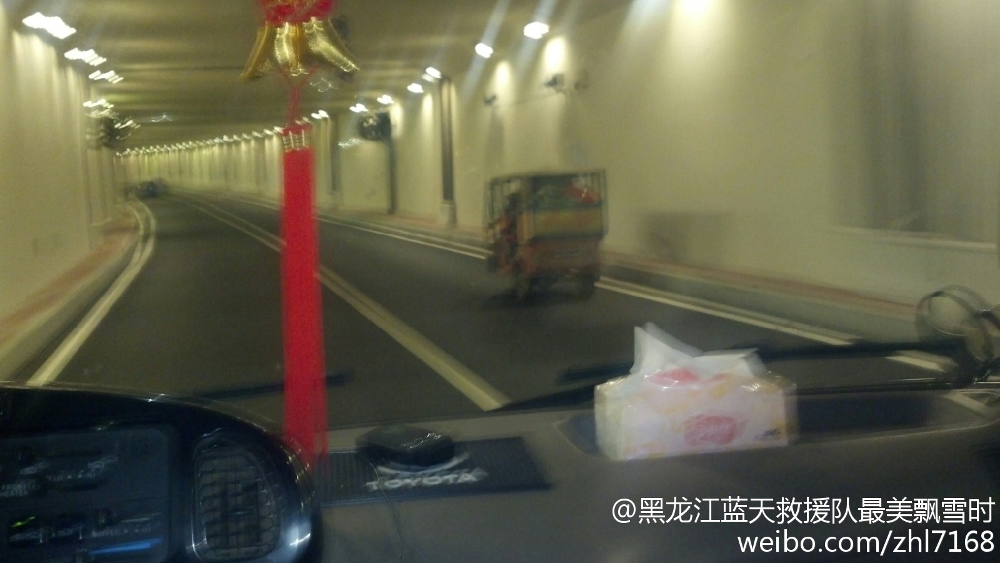

我认为人家是弱势群体，被逼无奈才干这个的，他们自己也知道这东西危险~政府应该想想取缔以后这些人该怎么办。@蓝天救援队赵鸿亮:地下通道内应禁止摩托车，自行车，行人通行，太危险了！这张照片拍在火车站通往南马路的地下通道内，非法摩的里坐了4个成年人，还有几个大包，一旦发生事故…肯定血肉模糊，这个摩的就这么难禁吗？火车站是哈尔滨门面啊，有关部门请管理一下吧@哈尔滨新闻网 @平安哈尔滨 @黑龙江新闻 @新浪黑龙江 